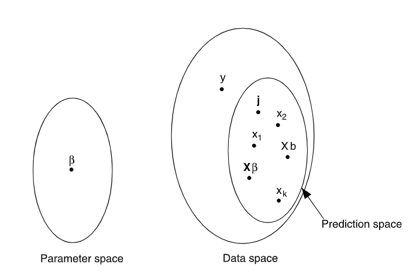
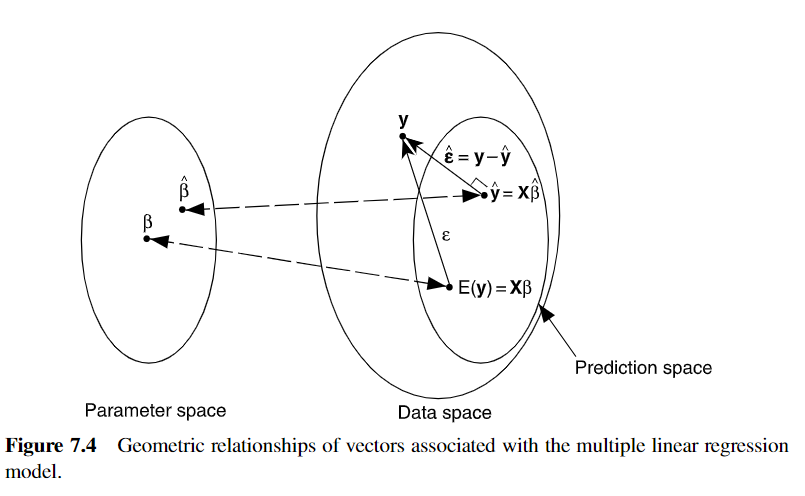

<!DOCTYPE html>


<html lang="zh-CN">


<head>
  <meta name="baidu-site-verification" content="codeva-NSg7ynviLa" />
  <meta charset="utf-8" />
    
  <meta name="viewport" content="width=device-width, initial-scale=1, maximum-scale=1" />
  <title>
    最小二乘的几何含义 |  
  </title>
  <meta name="generator" content="hexo-theme-ayer">
  
  <link rel="shortcut icon" href="/images/mojie.jpg" />
  
  
<link rel="stylesheet" href="/dist/main.css">

  <link rel="stylesheet" href="https://cdn.jsdelivr.net/gh/Shen-Yu/cdn/css/remixicon.min.css">
  
<link rel="stylesheet" href="/css/custom.css">

  
  <script src="https://cdn.jsdelivr.net/npm/pace-js@1.0.2/pace.min.js"></script>
  
  

  

<link rel="alternate" href="/atom.xml" title="null" type="application/atom+xml">
</head>

</html>

<body>
  <div id="app">
    
      
    <main class="content on">
      <section class="outer">
  <article
  id="post-最小二乘的几何含义"
  class="article article-type-post"
  itemscope
  itemprop="blogPost"
  data-scroll-reveal
>
  <div class="article-inner">
    
    <header class="article-header">
       
<h1 class="article-title sea-center" style="border-left:0" itemprop="name">
  最小二乘的几何含义
</h1>
 

    </header>
     
    <div class="article-meta">
      <a href="/posts/e4aae57/" class="article-date">
  <time datetime="2022-05-13T14:24:18.000Z" itemprop="datePublished">2022-05-13</time>
</a> 
  <div class="article-category">
    <a class="article-category-link" href="/categories/%E7%90%86%E8%AE%BA%E5%AD%A6%E4%B9%A0/">理论学习</a> / <a class="article-category-link" href="/categories/%E7%90%86%E8%AE%BA%E5%AD%A6%E4%B9%A0/%E7%BA%BF%E6%80%A7%E4%BB%A3%E6%95%B0/">线性代数</a>
  </div>
  
<div class="word_count">
    <span class="post-time">
        <span class="post-meta-item-icon">
            <i class="ri-quill-pen-line"></i>
            <span class="post-meta-item-text"> 字数统计:</span>
            <span class="post-count">1.8k</span>
        </span>
    </span>

    <span class="post-time">
        &nbsp; | &nbsp;
        <span class="post-meta-item-icon">
            <i class="ri-book-open-line"></i>
            <span class="post-meta-item-text"> 阅读时长≈</span>
            <span class="post-count">7 分钟</span>
        </span>
    </span>
</div>
 
    </div>
      
    <div class="tocbot"></div>


  
    <div class="article-entry" itemprop="articleBody">
       
  <p>我不知道有多少人认为自己对最小二乘法的思想理解不够清晰，其实如果从几何的角度，可以轻松掌握最小二乘的内涵。</p>
<span id="more"></span>
<h1 id="为什么是最小二乘最小平方">为什么是最小二乘/最小平方？</h1>
<p>在学习线性回归的过程中，往往一给出模型式子 $y=<em>{0}+</em>{1} x_{1}+<em>{2} x</em>{2}++<em>{k} x</em>{k}+$ ，后面就要讲到用最小二乘来估计参数 <span class="math inline">\(\beta_i\)</span> 。但是在讲到最小二乘法的时候，要么就是把最小二乘法视为“显然”的“公理”，不加解释；要么从直观上来说，我们要找一条直线与这些点的距离要足够近，也就是是残差 <span class="math inline">\(y_{i} -  \hat{y}_{i}\)</span> 最小，但是由于残差有正有负，因此我们采用残差的平方，需要使得所有残差的平方和最小，然后我当时就产生了一个疑问，那为什么不用残差的绝对值呢？</p>
<p>后来听了吴恩达老师的课，我认识到当代价函数采用平方和的时候，对其求导很简单，因此此时求解比较容易。如果你采用残差的绝对值的形式，绝对值不是处处可导，求解比较麻烦。然后我就产生了一种想法，就是因为绝对值求解不易，所以最小二乘是为了求解方便的一种退而求其次的方法。</p>
<p>最近，从《linear models in statistic》和 《linear algebra with applications》这两本书中，我发现从几何角度去看，最小二乘法其实是一种很自然的估计参数的方法。</p>
<h1 id="最小二乘的参数估计值">最小二乘的参数估计值</h1>
<p>根据我之前的博客 <a href="https://vincere.fun/posts/55264e6f/">矩阵微分与正规方程组推导</a> ，对于多元线性回归模型 <span class="math inline">\(\mathbf{y}=\mathbf{X} \boldsymbol{\beta}+\boldsymbol{\varepsilon}\)</span> 而言，最小二乘估计值满足正规方程组
<span class="math display">\[
\left(\mathbf{X}^{\prime} \mathbf{X}\right) \hat{\boldsymbol{\beta}}=\mathbf{X}^{\prime} \mathbf{y} .
\]</span>
其中 <span class="math inline">\(\mathbf{X}\)</span> 为一个 <span class="math inline">\(n \times (k+1)\)</span> 的矩阵，这里 <span class="math inline">\(n\)</span> 是样本数目，<span class="math inline">\(k\)</span> 为特征数目，并且 <span class="math inline">\(k+1 &lt; n\)</span> 。</p>
<p>如果 <span class="math inline">\(\mathbf{X}\)</span> 矩阵的秩为 <span class="math inline">\(k+1\)</span> ，那么该方程组存在唯一解
<span class="math display">\[
\hat{\boldsymbol{\beta}}=\left(\mathbf{X}^{\prime} \mathbf{X}\right)^{-1} \mathbf{X}^{\prime} \mathbf{y}
\]</span>
下面我们均假设 <span class="math inline">\(\mathbf{X}\)</span> 矩阵的秩为 <span class="math inline">\(k+1\)</span> ，即其为一个列满秩矩阵。</p>
<h1 id="最小二乘的几何性质">最小二乘的几何性质</h1>
<p>我们现在完全从最小二乘的几何性质出发去推导这些参数估计值。这部分内容来源于 《linear models in statistic》。</p>
<h2 id="参数空间数据空间和预测空间">参数空间、数据空间和预测空间</h2>
<p>最小二乘的几何方法首先要从两个高维空间中说起，一个 <span class="math inline">\((k+1)\)</span> 维的空间，一个 <span class="math inline">\(n\)</span> 维的空间。未知参数向量 <span class="math inline">\(\boldsymbol{\beta}\)</span> 可以视为 <span class="math inline">\((k+1)\)</span> 维的空间中的一个点，其坐标轴分别为 <span class="math inline">\((k+1)\)</span> 个回归系数 <span class="math inline">\(\beta_{0}, \beta_{1}, \beta_{0}, \ldots, \beta_{k}\)</span> ，因此我们可以称这个空间为<strong>参数空间</strong> (<em>parameter space</em>) 。相似地，数据向量 <span class="math inline">\(\mathbf{y}\)</span> 可以视为在 <span class="math inline">\(n\)</span> 维向量空间中的一个点，其坐标轴分别为 <span class="math inline">\(n\)</span> 个观测值，我们称这个空间为<strong>数据空间</strong> (<em>data space</em>) 。</p>
<p>多元线性回归的 <span class="math inline">\(\mathbf{X}\)</span> 矩阵可以写为下面的形式
<span class="math display">\[
\mathbf{X}=\left(\mathbf{j}, \mathbf{x}_{1}, \mathbf{x}_{2}, \mathbf{x}_{3}, \ldots, \mathbf{x}_{k}\right)
\]</span>
<span class="math inline">\(\mathbf{X}\)</span> 矩阵的每一列都是 <span class="math inline">\(n\)</span> 维向量，因此每一列都是数据空间中的一个点。因为我们假设 <span class="math inline">\(\mathbf{X}\)</span> 矩阵的秩为 <span class="math inline">\(k+1\)</span> ，因此其列向量是线性无关的，<span class="math inline">\(\mathbf{X}\)</span> 矩阵的列向量的线性组合组成了数据空间的一个子空间（易证其符合可加性和齐次性），可以写成
<span class="math display">\[
\mathbf{X b}=b_{0} \mathbf{j}+b_{1} \mathbf{x}_{1}+b_{2} \mathbf{x}_{2}+\cdots+b_{k} \mathbf{x}_{k}
\]</span>
其中 <span class="math inline">\(\mathbf{b}\)</span> 是任意一个 <span class="math inline">\(k+1\)</span> 的向量，因此 <span class="math inline">\(\mathbf{b}\)</span> 是参数空间中的一个向量。</p>
<p>我们称<span class="math inline">\(\mathbf{X}\)</span> 矩阵的列向量的线性组合组成的子空间为<strong>预测空间</strong> (<em>prediction space</em>), <span class="math inline">\(\mathbf{X}\)</span> 矩阵的列组成了预测空间的一组基。</p>
<p>三个向量空间的可视化见下图</p>
<p></p>
<h2 id="多元线性回归模型的几何解释">多元线性回归模型的几何解释</h2>
<p>多元线性回归认为 <span class="math inline">\(\mathbf{y}=\mathbf{X} \boldsymbol{\beta}+\boldsymbol{\varepsilon}\)</span> ， <span class="math inline">\(E(\mathbf{y})=\mathbf{X} \boldsymbol{\beta}\)</span> 。我 们的问题是 <span class="math inline">\(\boldsymbol{\beta}, \boldsymbol{\varepsilon}\)</span> 均不知道，我们可以其以几何形式表示为下图</p>
<p></p>
<p>如果我们忽略残差项 <span class="math inline">\(\boldsymbol{\varepsilon}\)</span> ，此时 <span class="math inline">\(\mathbf{X} \boldsymbol{\beta}=\mathbf{y}\)</span> 一般是一个超定方程组（独立的方程的数目超过了未知数的数目），超定方程组是无解的，也就是说我们一般无法找到一个 <span class="math inline">\(\boldsymbol{\beta}\)</span> ，使得 <span class="math inline">\(\mathbf{X} \boldsymbol{\beta}\)</span> 正好等于 <span class="math inline">\(\mathbf{y}\)</span> 。</p>
<p>那么，我们估计 <span class="math inline">\(E(\mathbf{y})\)</span> 的一个合理的几何思想是从预测空间中找到一个点 <span class="math inline">\(\mathbf{X} \boldsymbol{\hat{\beta}}\)</span> 与 <span class="math inline">\(\mathbf{y}\)</span> 距离最近。而两个向量之间的距离我们用范数来定义为
<span class="math display">\[
\| \mathbf{y} - \mathbf{X} \boldsymbol{\hat{\beta}} \|
\]</span>
如果我们定义残差向量 <span class="math inline">\(\boldsymbol{\hat{\varepsilon}} = \mathbf{y}-\mathbf{X} \boldsymbol{\hat{\beta}}\)</span> ，此时也就是需要找到一个 <span class="math inline">\(\boldsymbol{\hat{\beta}}\)</span> ，使得 <span class="math inline">\(\|\boldsymbol{\hat{\varepsilon}}\|\)</span> 最小。最小化 <span class="math inline">\(\|\boldsymbol{\hat{\varepsilon}}\|\)</span> 等价于最小化 <span class="math inline">\(\|\boldsymbol{\hat{\varepsilon}}\|^{2}\)</span> ，而 <span class="math inline">\(\|\boldsymbol{\hat{\varepsilon}}\|^{2}\)</span> 就是<strong>残差平方和</strong>，因此此时的几何思想就是最小二乘的思想。</p>
进一步，我们可以发现与 <span class="math inline">\(\mathbf{y}\)</span> 距离最近的点， <span class="math inline">\(\hat{\mathbf{y}}\)</span> 的一个条件是 <span class="math inline">\(\hat{\boldsymbol{\varepsilon}}=\mathbf{y}-\hat{\mathbf{y}}\)</span> 必须与预测空间（的所有向量）正交，也就是说， <span class="math inline">\(\hat{\mathbf{y}}\)</span> 是 <span class="math inline">\(\mathbf{y}\)</span> 在预测空间 <span class="math inline">\(R(A)\)</span> 的<strong>投影</strong>（可以通过勾股定理来证明）。更进一步，由于预测空间被 <span class="math inline">\(\mathbf{X}\)</span> 的列张成，因此我们有
$$
<span class="math display">\[\begin{aligned}
(\mathbf{Xb})^{\prime} \hat{\boldsymbol{\varepsilon}} = \mathbf{b}^{\prime}  \mathbf{X}^{\prime} \hat{\boldsymbol{\varepsilon}}  = \mathbf{0} \\

\end{aligned}\]</span>
<p><span class="math display">\[
该式对任意 $\mathbf{b}$ 均成立，因此我们有
\]</span>
^{} =
<span class="math display">\[
即
\]</span>
<sup>{}(-)=</sup>{}(- )=^{} -^{}  =
$$</p>
<p><span class="math display">\[
\mathbf{X}^{\prime} \mathbf{X} \hat{\boldsymbol{\beta}}=\mathbf{X}^{\prime} \mathbf{y}
\]</span></p>
<p>由于 <span class="math inline">\(\mathbf{X}\)</span> 列满秩，因此存在唯一解
<span class="math display">\[
\hat{\boldsymbol{\beta}}=\left(\mathbf{X}^{\prime} \mathbf{X}\right)^{-1} \mathbf{X}^{\prime} \mathbf{y}
\]</span>
这里我们采用了纯粹的几何思想，我们同样得到了正规方程组和最小二乘估计值。</p>
<h2 id="投影矩阵">投影矩阵</h2>
<p>因为 <span class="math inline">\(\mathbf{\hat{y}}\)</span> 是任意一个 $n  $ 的 <span class="math inline">\(\mathbf{y}\)</span> 向量在 <span class="math inline">\(m \times n\)</span> 的矩阵 <span class="math inline">\(\mathbf{X}\)</span> 的列空间上的投影，其投影 <span class="math inline">\(\mathbf{\hat{y}}\)</span> 的计算公式为
<span class="math display">\[
\mathbf{\hat{y}} =  \mathbf{X} \hat{\boldsymbol{\beta}}= \mathbf{X} \left(\mathbf{X}^{\prime} \mathbf{X}\right)^{-1} \mathbf{X}^{\prime} \mathbf{y} = \mathbf{Py}
\]</span>
其中，<span class="math inline">\(\mathbf{P} = \mathbf{X} \left(\mathbf{X}^{\prime} \mathbf{X}\right)^{-1} \mathbf{X}^{\prime}\)</span> ，我们称为投影矩阵。因此根据最小二乘法，我们得到了将任意一个向量投影到一个矩阵的列空间的一般公式。</p>
<p>当 <span class="math inline">\(\mathbf{X&#39;X}\)</span> 奇异时，此时我们有 <span class="math inline">\(\mathbf{P} = \mathbf{X} \left(\mathbf{X}^{\prime} \mathbf{X}\right)^{-} \mathbf{X}^{\prime}\)</span> 。而且根据广义逆的性质，我们知道无论 <span class="math inline">\(\left(\mathbf{X}^{\prime} \mathbf{X}\right)^{-}\)</span> 取何值，投影矩阵 <span class="math inline">\(\mathbf{P}\)</span> 均保持不变，因此投影 <span class="math inline">\(\mathbf{\hat{y}}\)</span> 也保持不变。但是 <span class="math inline">\(\hat{\boldsymbol{\beta}}=\left(\mathbf{X}^{\prime} \mathbf{X}\right)^{-} \mathbf{X}^{\prime} \mathbf{y}\)</span> 有无穷多个解。</p>
 
      <!-- reward -->
      
    </div>
    

    <!-- copyright -->
    
    <div class="declare">
      <ul class="post-copyright">
        <li>
          <i class="ri-copyright-line"></i>
          <strong>版权声明： </strong>
          
          本博客所有文章除特别声明外，著作权归作者所有。转载请注明出处！
          
        </li>
      </ul>
    </div>
    
    <footer class="article-footer">
       
  <ul class="article-tag-list" itemprop="keywords"><li class="article-tag-list-item"><a class="article-tag-list-link" href="/tags/%E7%90%86%E8%AE%BA%E5%AD%A6%E4%B9%A0/" rel="tag">理论学习</a></li><li class="article-tag-list-item"><a class="article-tag-list-link" href="/tags/%E7%BA%BF%E6%80%A7%E4%BB%A3%E6%95%B0/" rel="tag">线性代数</a></li></ul>

    </footer>
  </div>

   
  <nav class="article-nav">
    
      <a href="/posts/de3921ab/" class="article-nav-link">
        <strong class="article-nav-caption">上一篇</strong>
        <div class="article-nav-title">
          
            行列式与平行四边形面积
          
        </div>
      </a>
    
    
      <a href="/posts/4e1b8d12/" class="article-nav-link">
        <strong class="article-nav-caption">下一篇</strong>
        <div class="article-nav-title">证明 row rank = column rank 及 rank(AA&#39;) = rank(A&#39;A) = rank(A)</div>
      </a>
    
  </nav>

  
   
     
</article>

</section>
      <footer class="footer">
  <div class="outer">
    <ul>
      <li>
        Copyrights &copy;
        2019-2026
        <i class="ri-heart-fill heart_icon"></i> Vincere Zhou
      </li>
    </ul>
    <ul>
      <li>
        
        
        <span>
  <span><i class="ri-user-3-fill"></i>访问人数:<span id="busuanzi_value_site_uv"></span></s>
  <span class="division">|</span>
  <span><i class="ri-eye-fill"></i>浏览次数:<span id="busuanzi_value_page_pv"></span></span>
</span>
        
      </li>
    </ul>
    <ul>
      
    </ul>
    <ul>
      
    </ul>
    <ul>
      <li>
        <!-- cnzz统计 -->
        
      </li>
    </ul>

    <!-- 与只只在一起天数 -->
	<ul>
		<li><span id="lovetime_span"></span></li>
	</ul>
    <script type="text/javascript">			
        function show_runtime() {
            window.setTimeout("show_runtime()", 1000);
            X = new Date("03/04/2021 22:11:00");
            Y = new Date();
            T = (Y.getTime() - X.getTime());
            M = 24 * 60 * 60 * 1000;
            a = T / M;
            A = Math.floor(a);
            b = (a - A) * 24;
            B = Math.floor(b);
            c = (b - B) * 60;
            C = Math.floor((b - B) * 60);
            D = Math.floor((c - C) * 60);
            lovetime_span.innerHTML = "只只和男朋友在一起了 " + A + "天" + B + "小时" + C + "分" + D + "秒"
        }
        show_runtime();
    </script>

  </div>
</footer>
      <div class="float_btns">
        <div class="totop" id="totop">
  <i class="ri-arrow-up-line"></i>
</div>

      </div>
    </main>
    <aside class="sidebar on">
      <button class="navbar-toggle"></button>
<nav class="navbar">
  
  <div class="logo">
    <a href="/"></a>
  </div>
  
  <ul class="nav nav-main">
    
    <li class="nav-item">
      <a class="nav-item-link" href="/">主页</a>
    </li>
    
    <li class="nav-item">
      <a class="nav-item-link" href="/archives">归档</a>
    </li>
    
    <li class="nav-item">
      <a class="nav-item-link" href="/categories">分类</a>
    </li>
    
    <li class="nav-item">
      <a class="nav-item-link" href="/tags">标签</a>
    </li>
    
    <li class="nav-item">
      <a class="nav-item-link" href="/friends">友链</a>
    </li>
    
    <li class="nav-item">
      <a class="nav-item-link" href="/about">关于</a>
    </li>
    
  </ul>
</nav>
<nav class="navbar navbar-bottom">
  <ul class="nav">
    <li class="nav-item">
      
      <a class="nav-item-link nav-item-search"  title="搜索">
        <i class="ri-search-line"></i>
      </a>
      
      
      <a class="nav-item-link" target="_blank" href="/atom.xml" title="RSS Feed">
        <i class="ri-rss-line"></i>
      </a>
      
    </li>
  </ul>
</nav>
<div class="search-form-wrap">
  <div class="local-search local-search-plugin">
  <input type="search" id="local-search-input" class="local-search-input" placeholder="Search...">
  <div id="local-search-result" class="local-search-result"></div>
</div>
</div>
    </aside>
    <script>
      if (window.matchMedia("(max-width: 768px)").matches) {
        document.querySelector('.content').classList.remove('on');
        document.querySelector('.sidebar').classList.remove('on');
      }
    </script>
    <div id="mask"></div>

<!-- #reward -->
<div id="reward">
  <span class="close"><i class="ri-close-line"></i></span>
  <p class="reward-p"><i class="ri-cup-line"></i>请我喝杯茶吧~</p>
  <div class="reward-box">
    
    <div class="reward-item">
      
      <span class="reward-type">支付宝</span>
    </div>
    
    
    <div class="reward-item">
      
      <span class="reward-type">微信</span>
    </div>
    
  </div>
</div>
    
<script src="/js/jquery-2.0.3.min.js"></script>


<script src="/js/lazyload.min.js"></script>

<!-- Tocbot -->


<script src="/js/tocbot.min.js"></script>

<script>
  tocbot.init({
    tocSelector: '.tocbot',
    contentSelector: '.article-entry',
    headingSelector: 'h1, h2, h3, h4, h5, h6',
    hasInnerContainers: true,
    scrollSmooth: true,
    scrollContainer: 'main',
    positionFixedSelector: '.tocbot',
    positionFixedClass: 'is-position-fixed',
    fixedSidebarOffset: 'auto'
  });
</script>

<script src="https://cdn.jsdelivr.net/npm/jquery-modal@0.9.2/jquery.modal.min.js"></script>
<link rel="stylesheet" href="https://cdn.jsdelivr.net/npm/jquery-modal@0.9.2/jquery.modal.min.css">
<script src="https://cdn.jsdelivr.net/npm/justifiedGallery@3.7.0/dist/js/jquery.justifiedGallery.min.js"></script>

<script src="/dist/main.js"></script>

<!-- ImageViewer -->

<!-- Root element of PhotoSwipe. Must have class pswp. -->
<div class="pswp" tabindex="-1" role="dialog" aria-hidden="true">

    <!-- Background of PhotoSwipe. 
         It's a separate element as animating opacity is faster than rgba(). -->
    <div class="pswp__bg"></div>

    <!-- Slides wrapper with overflow:hidden. -->
    <div class="pswp__scroll-wrap">

        <!-- Container that holds slides. 
            PhotoSwipe keeps only 3 of them in the DOM to save memory.
            Don't modify these 3 pswp__item elements, data is added later on. -->
        <div class="pswp__container">
            <div class="pswp__item"></div>
            <div class="pswp__item"></div>
            <div class="pswp__item"></div>
        </div>

        <!-- Default (PhotoSwipeUI_Default) interface on top of sliding area. Can be changed. -->
        <div class="pswp__ui pswp__ui--hidden">

            <div class="pswp__top-bar">

                <!--  Controls are self-explanatory. Order can be changed. -->

                <div class="pswp__counter"></div>

                <button class="pswp__button pswp__button--close" title="Close (Esc)"></button>

                <button class="pswp__button pswp__button--share" style="display:none" title="Share"></button>

                <button class="pswp__button pswp__button--fs" title="Toggle fullscreen"></button>

                <button class="pswp__button pswp__button--zoom" title="Zoom in/out"></button>

                <!-- Preloader demo http://codepen.io/dimsemenov/pen/yyBWoR -->
                <!-- element will get class pswp__preloader--active when preloader is running -->
                <div class="pswp__preloader">
                    <div class="pswp__preloader__icn">
                        <div class="pswp__preloader__cut">
                            <div class="pswp__preloader__donut"></div>
                        </div>
                    </div>
                </div>
            </div>

            <div class="pswp__share-modal pswp__share-modal--hidden pswp__single-tap">
                <div class="pswp__share-tooltip"></div>
            </div>

            <button class="pswp__button pswp__button--arrow--left" title="Previous (arrow left)">
            </button>

            <button class="pswp__button pswp__button--arrow--right" title="Next (arrow right)">
            </button>

            <div class="pswp__caption">
                <div class="pswp__caption__center"></div>
            </div>

        </div>

    </div>

</div>

<link rel="stylesheet" href="https://cdn.jsdelivr.net/npm/photoswipe@4.1.3/dist/photoswipe.min.css">
<link rel="stylesheet" href="https://cdn.jsdelivr.net/npm/photoswipe@4.1.3/dist/default-skin/default-skin.min.css">
<script src="https://cdn.jsdelivr.net/npm/photoswipe@4.1.3/dist/photoswipe.min.js"></script>
<script src="https://cdn.jsdelivr.net/npm/photoswipe@4.1.3/dist/photoswipe-ui-default.min.js"></script>

<script>
    function viewer_init() {
        let pswpElement = document.querySelectorAll('.pswp')[0];
        let $imgArr = document.querySelectorAll(('.article-entry img:not(.reward-img)'))

        $imgArr.forEach(($em, i) => {
            $em.onclick = () => {
                // slider展开状态
                // todo: 这样不好，后面改成状态
                if (document.querySelector('.left-col.show')) return
                let items = []
                $imgArr.forEach(($em2, i2) => {
                    let img = $em2.getAttribute('data-idx', i2)
                    let src = $em2.getAttribute('data-target') || $em2.getAttribute('src')
                    let title = $em2.getAttribute('alt')
                    // 获得原图尺寸
                    const image = new Image()
                    image.src = src
                    items.push({
                        src: src,
                        w: image.width || $em2.width,
                        h: image.height || $em2.height,
                        title: title
                    })
                })
                var gallery = new PhotoSwipe(pswpElement, PhotoSwipeUI_Default, items, {
                    index: parseInt(i)
                });
                gallery.init()
            }
        })
    }
    viewer_init()
</script>

<!-- MathJax -->

<!-- Katex -->

<!-- busuanzi  -->


<script src="/js/busuanzi-2.3.pure.min.js"></script>


<!-- ClickLove -->

<!-- ClickBoom1 -->

<!-- ClickBoom2 -->

<!-- CodeCopy -->


<link rel="stylesheet" href="/css/clipboard.css">

<script src="https://cdn.jsdelivr.net/npm/clipboard@2/dist/clipboard.min.js"></script>
<script>
  function wait(callback, seconds) {
    var timelag = null;
    timelag = window.setTimeout(callback, seconds);
  }
  !function (e, t, a) {
    var initCopyCode = function(){
      var copyHtml = '';
      copyHtml += '<button class="btn-copy" data-clipboard-snippet="">';
      copyHtml += '<i class="ri-file-copy-2-line"></i><span>COPY</span>';
      copyHtml += '</button>';
      $(".highlight .code pre").before(copyHtml);
      $(".article pre code").before(copyHtml);
      var clipboard = new ClipboardJS('.btn-copy', {
        target: function(trigger) {
          return trigger.nextElementSibling;
        }
      });
      clipboard.on('success', function(e) {
        let $btn = $(e.trigger);
        $btn.addClass('copied');
        let $icon = $($btn.find('i'));
        $icon.removeClass('ri-file-copy-2-line');
        $icon.addClass('ri-checkbox-circle-line');
        let $span = $($btn.find('span'));
        $span[0].innerText = 'COPIED';
        
        wait(function () { // 等待两秒钟后恢复
          $icon.removeClass('ri-checkbox-circle-line');
          $icon.addClass('ri-file-copy-2-line');
          $span[0].innerText = 'COPY';
        }, 2000);
      });
      clipboard.on('error', function(e) {
        e.clearSelection();
        let $btn = $(e.trigger);
        $btn.addClass('copy-failed');
        let $icon = $($btn.find('i'));
        $icon.removeClass('ri-file-copy-2-line');
        $icon.addClass('ri-time-line');
        let $span = $($btn.find('span'));
        $span[0].innerText = 'COPY FAILED';
        
        wait(function () { // 等待两秒钟后恢复
          $icon.removeClass('ri-time-line');
          $icon.addClass('ri-file-copy-2-line');
          $span[0].innerText = 'COPY';
        }, 2000);
      });
    }
    initCopyCode();
  }(window, document);
</script>


<!-- CanvasBackground -->


<script>
window.MathJax = {
  tex: {
    inlineMath: [['$','$'], ['\\(','\\)']],
    displayMath: [['$$','$$'], ['\\[','\\]']],
    processEscapes: true
  },
  options: { skipHtmlTags: ['script','noscript','style','textarea','pre','code'] }
};
</script>
<script src="https://cdn.jsdelivr.net/npm/mathjax@3/es5/tex-chtml.js" async></script>


    
  </div>

<script src="/live2dw/lib/L2Dwidget.min.js?094cbace49a39548bed64abff5988b05"></script><script>L2Dwidget.init({"pluginRootPath":"live2dw/","pluginJsPath":"lib/","pluginModelPath":"assets/","tagMode":false,"debug":false,"model":{"jsonPath":"/live2dw/assets/wanko.model.json"},"display":{"position":"left","width":150,"height":300,"hOffset":80,"vOffset":-70},"mobile":{"show":false,"scale":0.5},"log":false});</script></body>

</html>